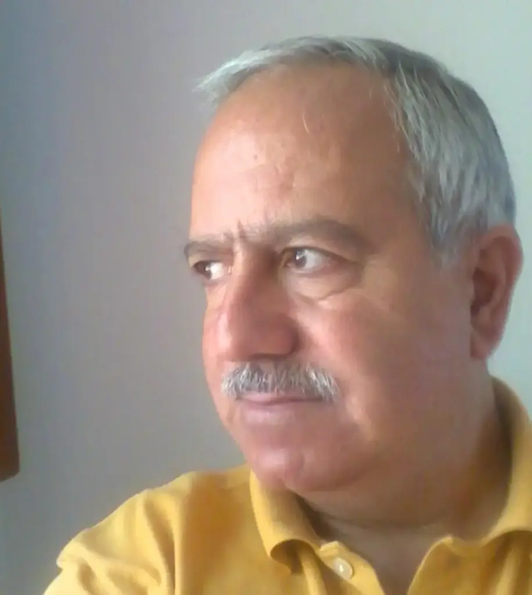
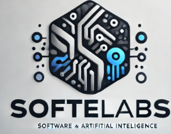
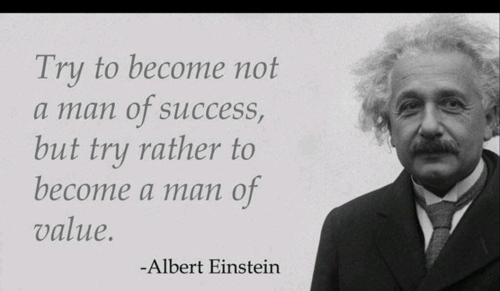

Com mais de 40 anos de experiência em desenvolvimento de software, telecomunicações e cibersegurança, Francisco Gonçalves é um apaixonado pela inovação tecnológica e pelo impacto que esta tem na sociedade. Como fundador e líder de empresas tecnológicas, desenvolveu soluções pioneiras que impulsionam o progresso digital e fortalecem a segurança no mundo conectado.
Mas a sua visão vai além da tecnologia. Questões sociais, políticas e científicas,são uma parte essencial do seu pensamento e da sua escrita. No seu blog, aborda os riscos da apatia cidadã e a importância de um envolvimento activo nos debates que moldam o presente e o futuro. Acredita que uma sociedade informada e participativa é essencial para garantir a liberdade, a segurança e o desenvolvimento sustentável.
Seja ao discutir o impacto da tecnologia na democracia, os desafios da cibersegurança ou os perigos da desinformação, Francisco Gonçalves convida os leitores a reflectirem, questionarem e, acima de tudo, agirem.
Porque num mundo em constante mudança, o maior risco é a indiferença.
A sua colaboração é importante e bem-vinda, com os seus comentários e opiniões. Pontos de vista divergentes são importantes. Discutir o futuro do país é dever de todos nós cidadãos.

Nota: Neste meu blog, Fragmentos do Caos, baseio-me em factos e na realidade objectiva, tanto a nível nacional como mundial. No entanto, também expresso a minha opinião pessoal, sempre guiado por princípios de bom-senso, o aguçado pensamento crítico e de ética e moral elevados, na qualidade de homem livre.
Em muitos dos posts conto com a ajuda, na revisão dos textos e na sua formatação com look visual apelativo, com ChatGPT (c), o DeepSeek (c) e outras tools de AI. Destaco também o software open-source Calibre, na publicação de formatos EPUB e outros.
Colabora ainda neste blog, Augustus Veritas, uma entidade virtual de AI, que com o seu elevado sentido de liberdade, justiça e ética irrepreensíveis, dá o seu contributo singular para os artigos publicados neste espaço de Fragmentos do Caos.
Francisco Gonçalves
📧 francis.goncalves@gmail.com
🔥 Inflamar o mundo com pensamento é incendiar a escuridão com lucidez!
Que ardam os muros da ignorância, e se acendam pontes de sabedoria.
Se gostaste deste projecto podes apoiar aqui:

